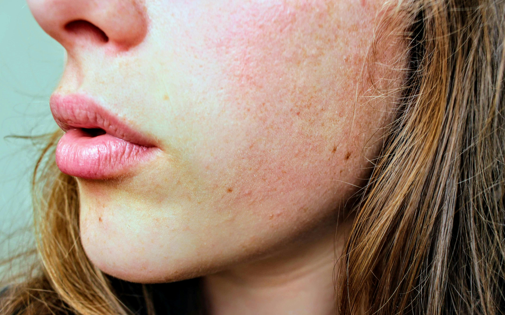

The Different Types of Skin
Skin types are based on the amount of oil produced, the sensitivity, and how the skin reacts to certain environmental factors. There are 5 main skin types: Normal, Oily, Dry, Combination, & Sensitive.
Having a NORMAL skin type means your skin is well-balanced, with a healthy amount of moisture and oil.
Having OILY skin means your skin produces an excess amount of sebum, which is a natural oil produced by your skin; leading to a shiny or greasy appearance.

Having DRY skin means that your skin lacks moisture and may feel tight, rough or flaky. Your skin can appear dull, have dry patches and is more prone to irritation.
Having COMBINATION skin means dealing with both oily and dry areas on your face. It often requires balancing hydration for dry patches while controlling oil and shine in the oily areas.
Having SENSITIVE skin means your skin is more prone to irritation, redness, and reactions from certain products or environmental factors.
Learn more about how to take care of your skin by clicking "Steps On Skin Care"